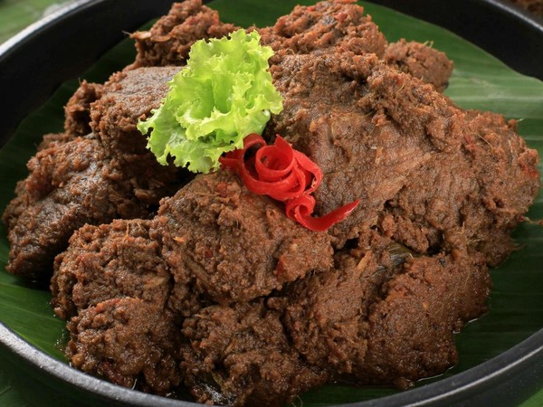
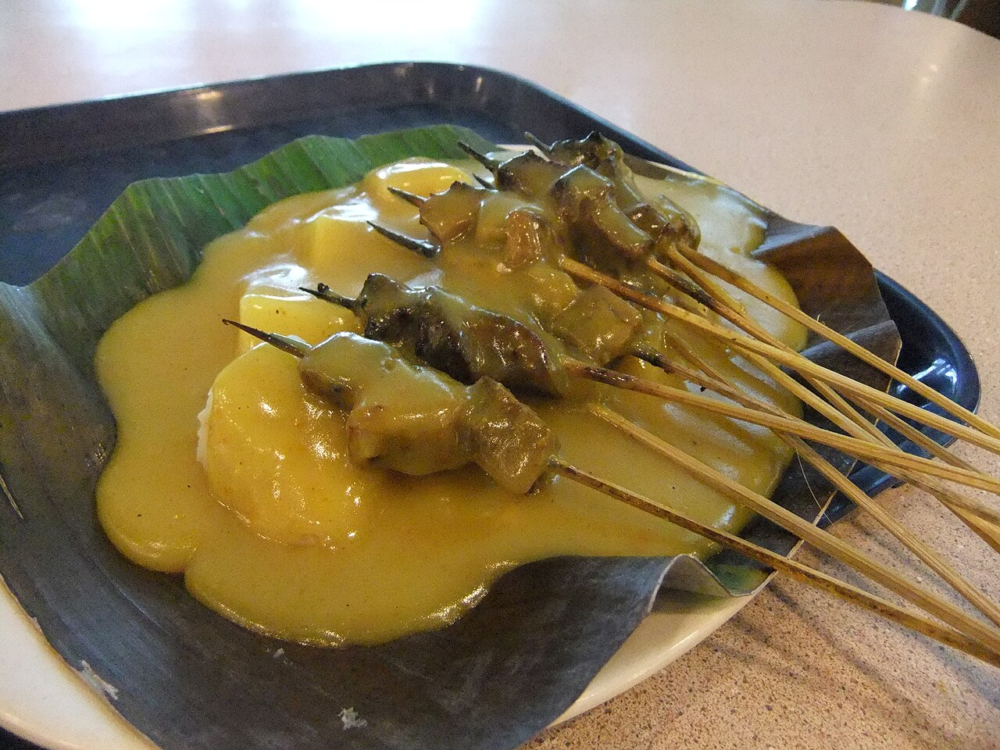

Culinary of Padang
Rendang
Officially recognized globally as one of the most delicious foods in the world, Rendang is a rich, tender coconut beef stew. It is slow-cooked for hours with a paste of mixed ground spices until the liquids evaporate and the meat absorbs the complex flavors.

Sate Padang
A specialty satay made from beef cut into small cubes with a spicy offal broth. Its main characteristic is the thick yellow sauce made from rice flour mixed with beef and offal broth, turmeric, ginger, garlic, coriander, galangal root, cumin, curry powder, and salt.
